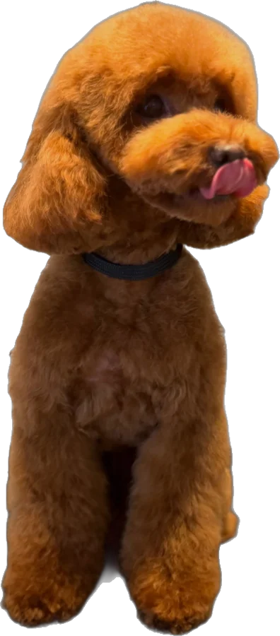
StitchLittle Stitch, big cuteness! Altijd leuk om hem terug te mogen verwennen.
Award-winning trimsalon en boetiek in Brecht. Mila is poedel- en doodlespecialist en knipt in Asian Style, met veel geduld voor elk hondje, hyperactief of bang.
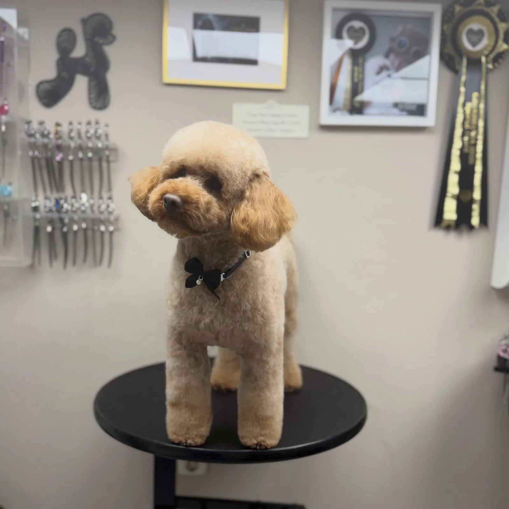
Elke week stappen hier nieuwe teddybeertjes de deur uit. Een paar vaste gasten die we graag terugzien.

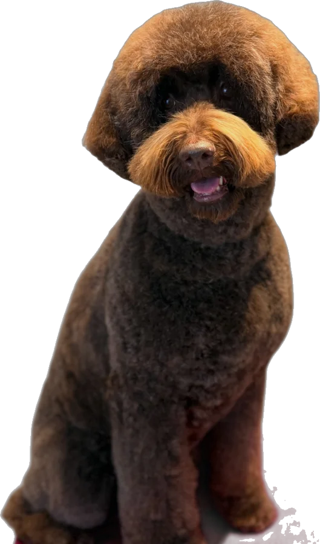
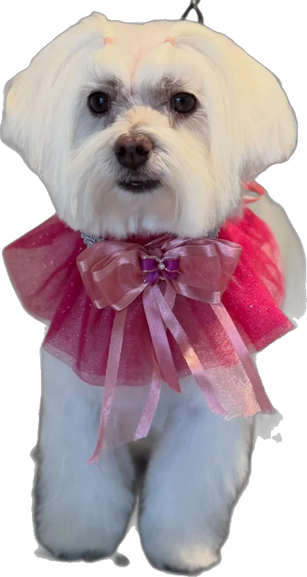
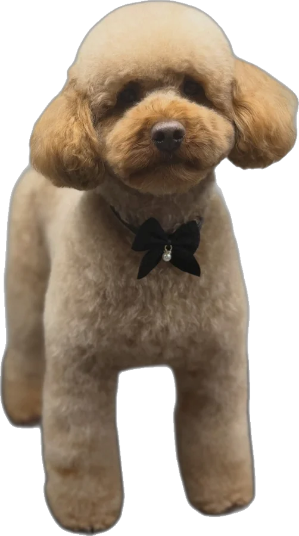
Mila knipt niet enkel in het salon. Op wedstrijden laat ze zien wat ze kan, en dat zie je terug aan elk hondje dat de deur uitstapt in Brecht.
Mila nam zelfs de tijd om onze dochter uitgebreid haar beroep uit te leggen voor een spreekbeurt.Uit de review van Didier Piette
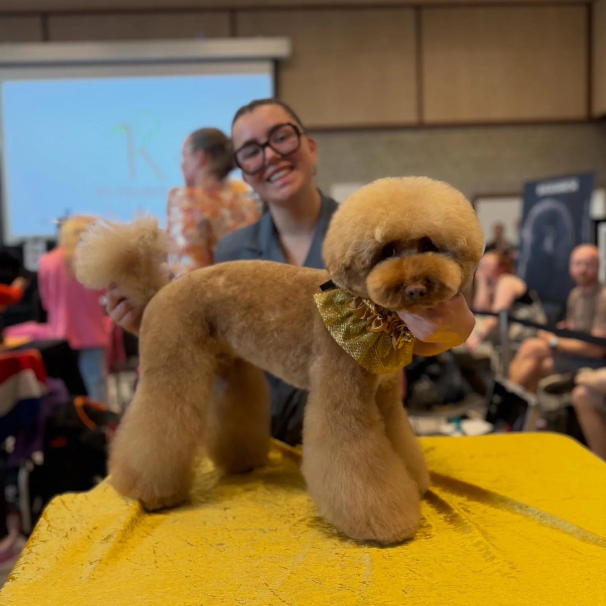
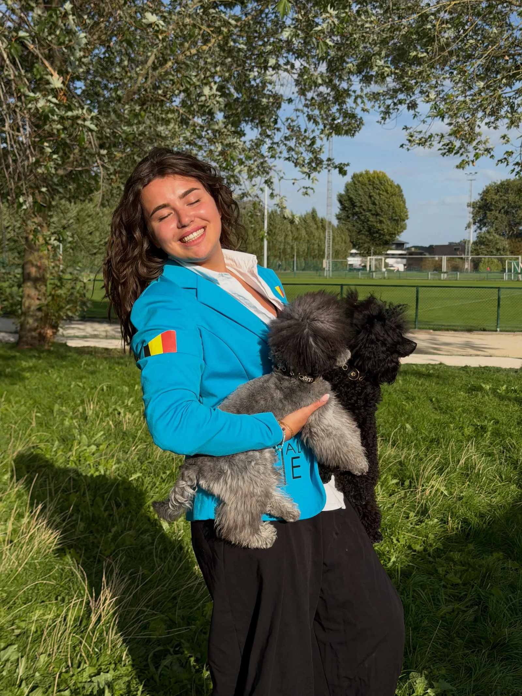
Sinds december 2025 zitten we in een nieuw salon: licht, rustig en met een boetiek erbij. Alles wat je viervoeter nodig heeft, onder één dak.
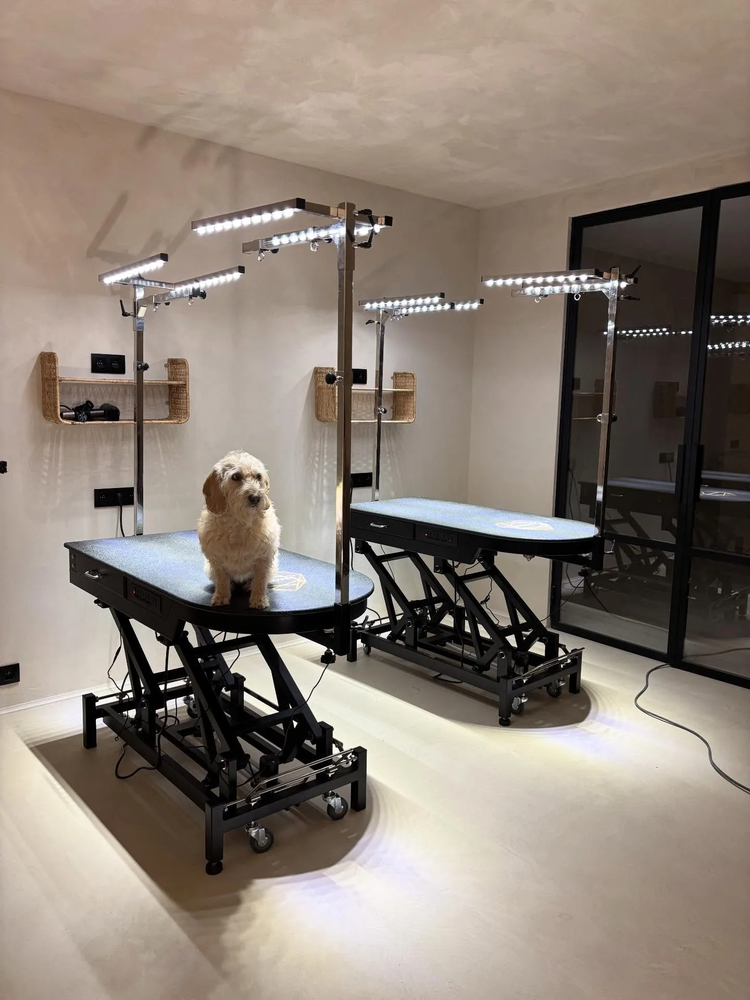
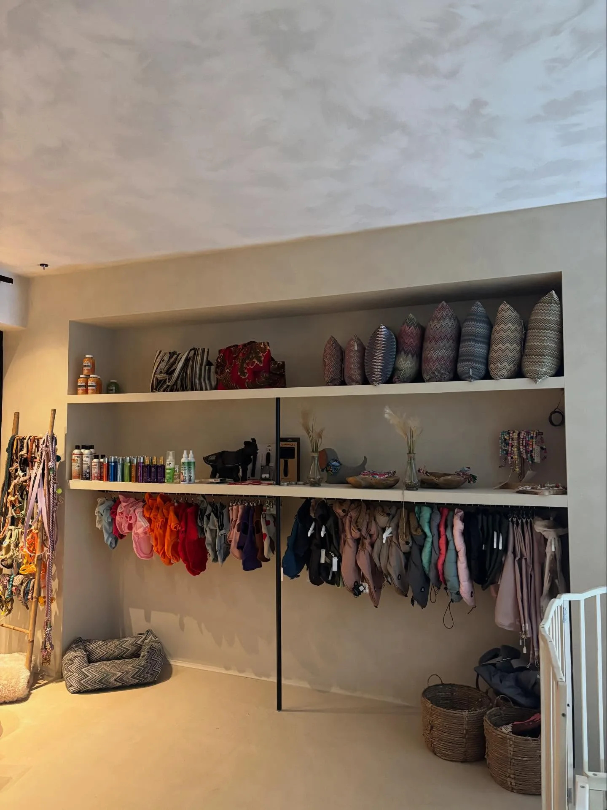
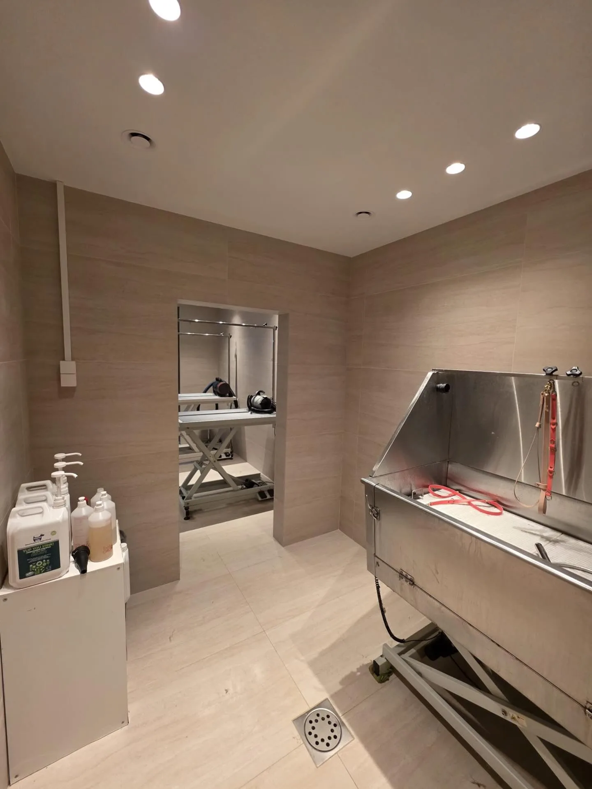
"Het is een kapsalon gecombineerd met een boetiek voor al wat men nodig heeft voor zijn viervoeter. De collektie is modisch, jong en van prima kwaliteit."
Jan Torfs, op GoogleMijn twee Tibetaanse terriërs gaan er met veel plezier naar binnen❤️. Het team is dan ook supervriendelijk, zowel naar de hondjes als naar hun baasjes. Puma en Balou zijn altijd supermooi verzorgd, twee fluffy beertjes nadien.
Mila zorgt al van het begin voor Teddy. Teddy is helemaal op zijn gemak & wordt het beste verzorgd. Altijd mooi, proper geknipt & met alle liefde & zorg behandeld.
Mila neemt elk hondje hoe zij of hij is hyperactief of bang elk hondje wordt bij haar super ontvangen en verzorgd.
Al jarenlang brengen we onze langharige teckel Lola met een gerust hart naar Tutu Chien. Mila zorgt er telkens opnieuw voor dat Lola er piekfijn uitziet.
We werken op afspraak, zodat elk hondje de tijd en aandacht krijgt die het nodig heeft. Stuur een berichtje met het ras en de look die je wil, dan zoeken we samen een moment.
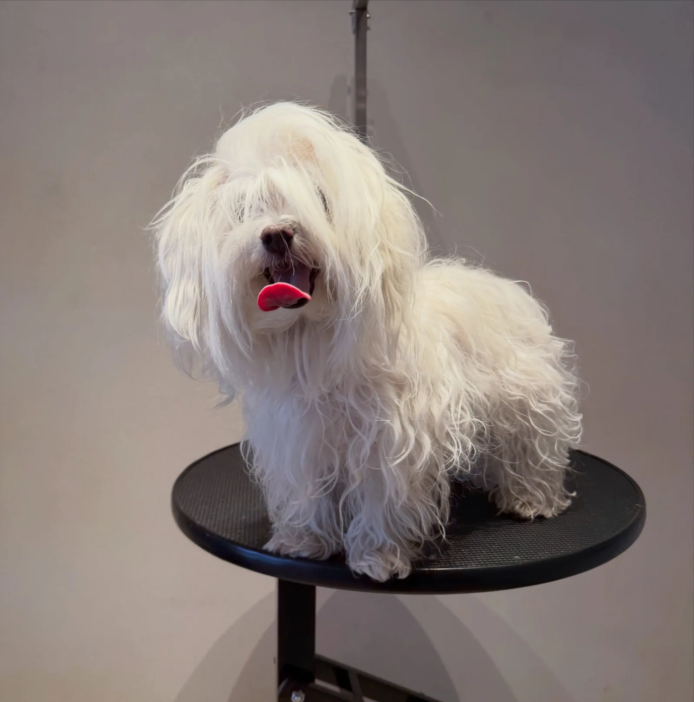
Ik maakte deze demo voor jullie om te tonen wat er kan. Na een kort gesprek maak ik er iets veel persoonlijkers van, helemaal naar jullie wens.
Vrijblijvend. Ik kom langs of we bellen.
Op maat, op jullie eigen domein.
Geen voorschot. Jullie betalen pas als alles klaar is.
Hosting, domeinnaam en kleine wijzigingen, zoals nieuwe openingsuren.
Omdat een voorbeeld meer zegt dan een mail. Zo zien jullie meteen wat er kan, en het kost jullie niets.
Nee. Het gesprek is vrijblijvend. Vinden jullie het niks, dan is het daarmee gedaan.
Na ons gesprek staat jullie site binnen 10 tot 14 dagen online.
Zeker. Jullie domeinnaam kan gewoon blijven, de nieuwe site komt in de plaats van de oude.
Nee, dat doe ik op basis van ons gesprek. Eigen foto's zijn mooi meegenomen, maar niet nodig om te starten.